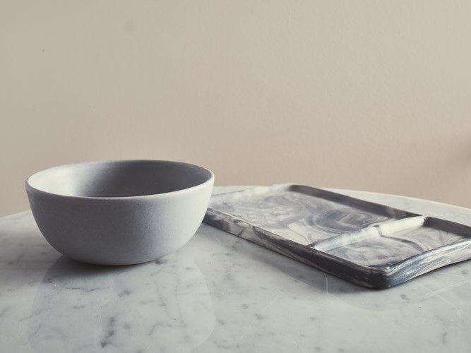
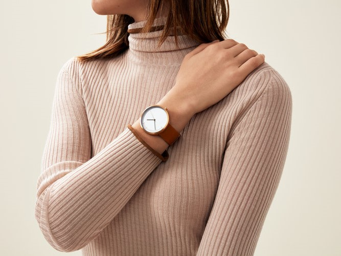
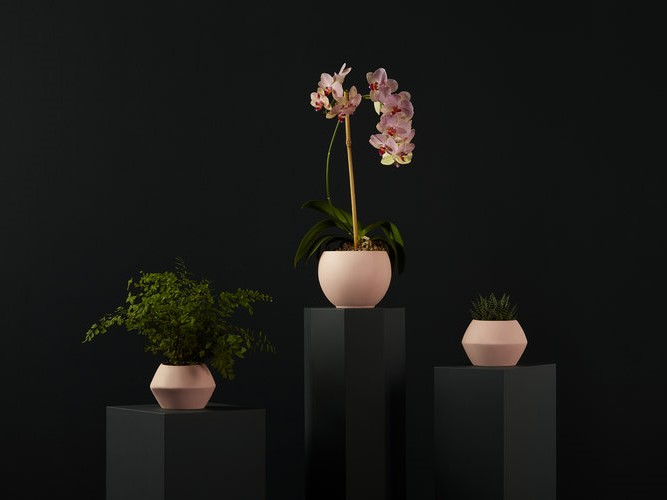

<section class="work">
    <div class="content-wrapper">
        <div class="content">
            <div class="portfolio">
                <a class="portfolio__item" href="/clay-ceramics/">
                    
                    <h4>Clay Ceramics</h4>
                </a>
                <a class="portfolio__item" href="/5past-watches/">
                    
                    <h4>5Past Watches</h4>
                </a>
                <a class="portfolio__item" href="/specialists/">
                    
                    <h4>Specialists</h4>
                </a>
                <a class="portfolio__item" href="/studio-vega/">
                    
                    <h4>Studio Vega</h4>
                </a>
                <a class="portfolio__item" href="/sackett-woodworking/">
                    
                    <h4>Sackett Woodworking</h4>
                </a>
                <a class="portfolio__item" href="/crosby-nursery/">
                    
                    <h4>Crosby Nursery</h4>
                </a>
            </div>
        </div>
        <div class="content half">
            <h1>Hollie Beaumont is a photographer and art director based in London. She shoots a diverse range of subjects for commercial and editorial clients, all with a clean and elegant aesthetic.</h1>
            <a href="/contact/">Let’s work together.</a>
        </div>
    </div>
</section>